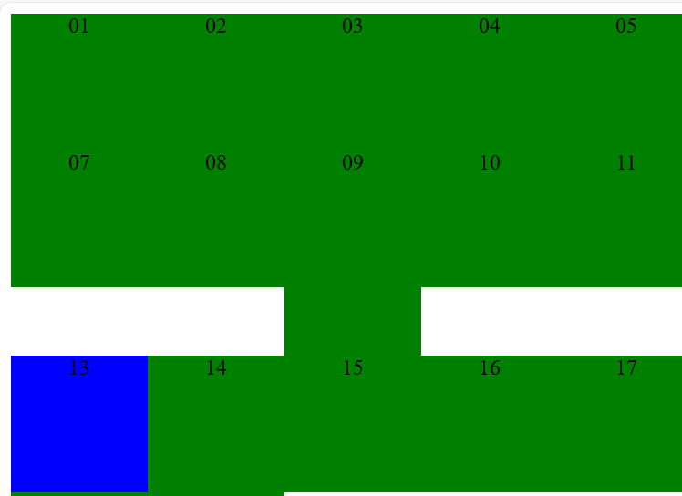

Opdracht 5:
Geef element 13 de 'break' class. Resize je browser opnieuw. Ga na dat element 13 altijd op een nieuwe 'regel' begint en wel lager dan element 09.

Er zijn dus verschillende toepassingen voor floating elements:
- Een inline stuk laten zweven zodat de andere inline delen (bv. tekst) errond gezet worden. Hier heeft clear geen nut.
- Een block laten zweven, met ernaast wellicht 1 of meerdere andere zwevende blokken. Hier kan clear nuttig zijn voor blokken die erna komen.